Week 1: Wafer clean and oxidation
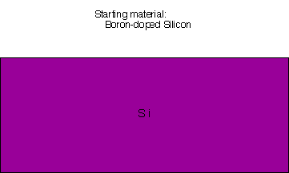 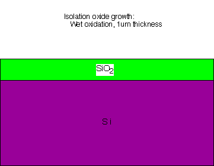
Week 2: Oxide measurement and Photomask #1
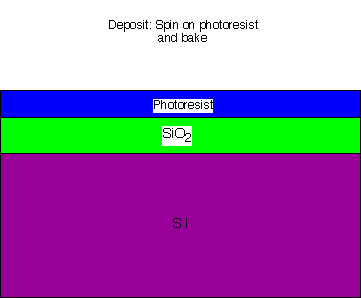 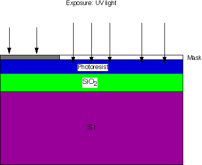 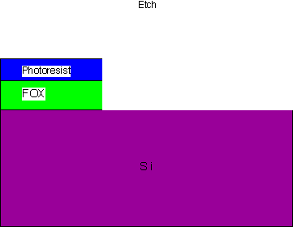 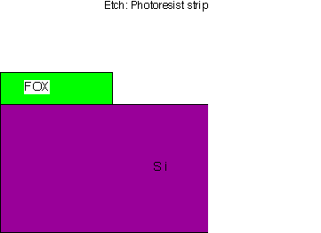
Week 3: Polysilicon deposition
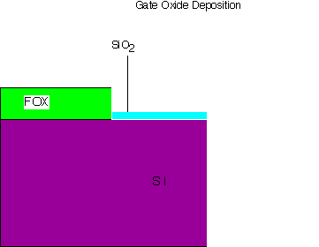 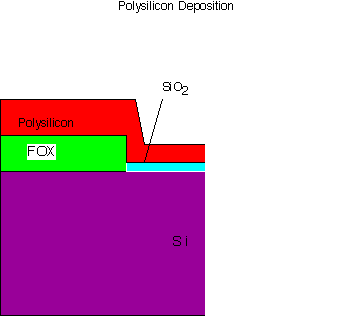
Week 4: Polysilicon oxidation and annealing; Photomask #2
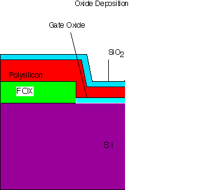 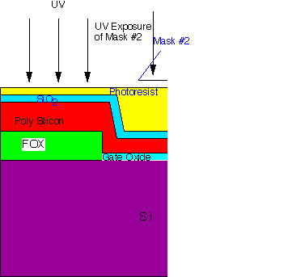 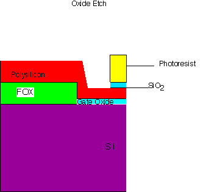 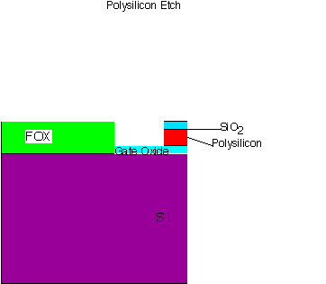 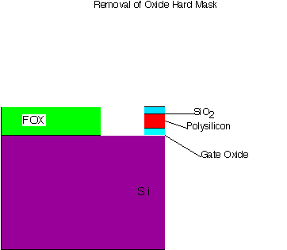
Week 5: Ion Implantation
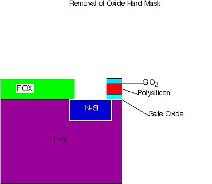
Week 6: Implant activation and drive-in; isolation oxide; photomask #3
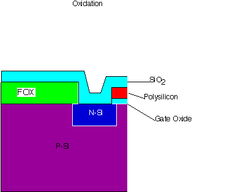 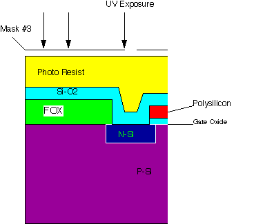 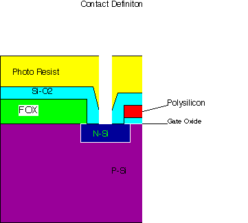
Week 7: Metal Deposition
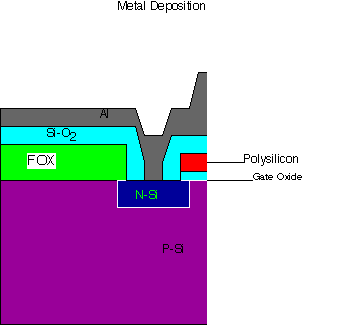
Week 8: Photomask #4: Metal definition; Forming gas anneal
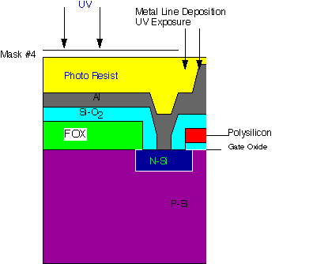 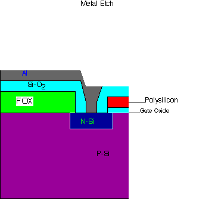
Back to main lab page
November 13, 1995